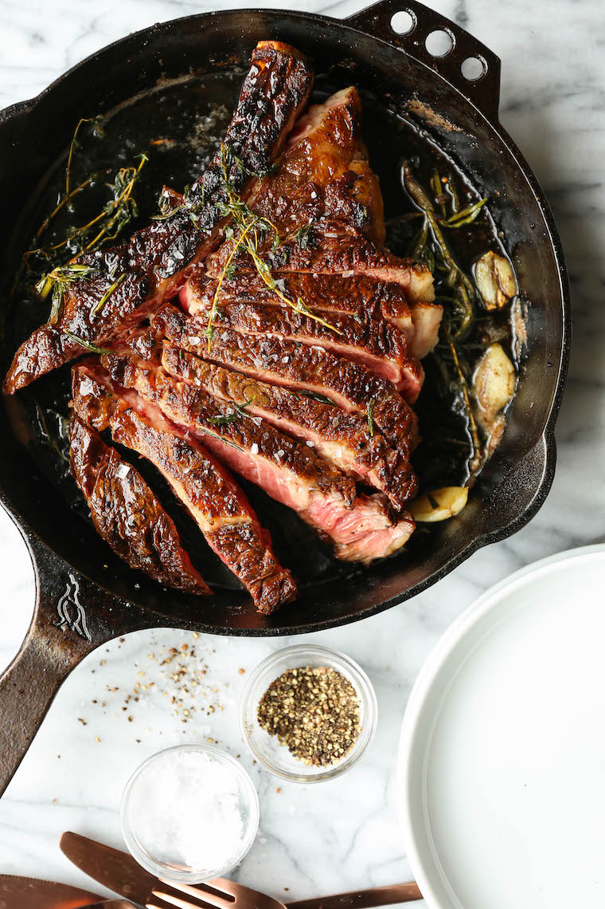

Perfect Cast iron Ribeye

Instructions for cooking a perfect, tender and flavorful ribeye
Ingredients
- 1 inch thick ribeye
- Sea salt
- Ground black pepper
- half stick of butter
- 2 Tbsp of olive oil
- Cast iron pan
Aromatics of preference (thyme, rosemary, garlic cloves, ect)
- Rinse then pat dry your steak.
- Liberally season the steak on both sides with salt and pepper.
- Add the olive oil to the pan bring to a medium-high heat.
- Add steak to the pan, flip after 4 minutes.
- Once a total cook time for 8 minutes has elapsed, add butter and aromatics to the pan.
- Baste (cover) the steak with the melted butter for one minute, flip the steak and repeat on the other side.
- Remove steak from pan, cover with aluminum foil and let rest for atleast 5 minutes.